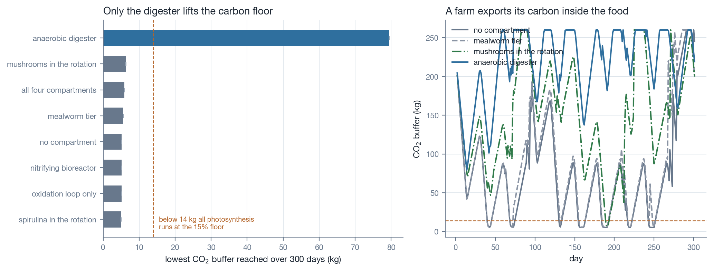
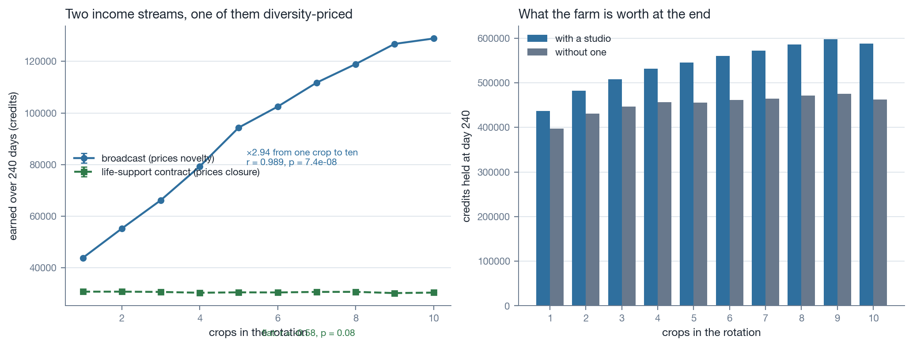
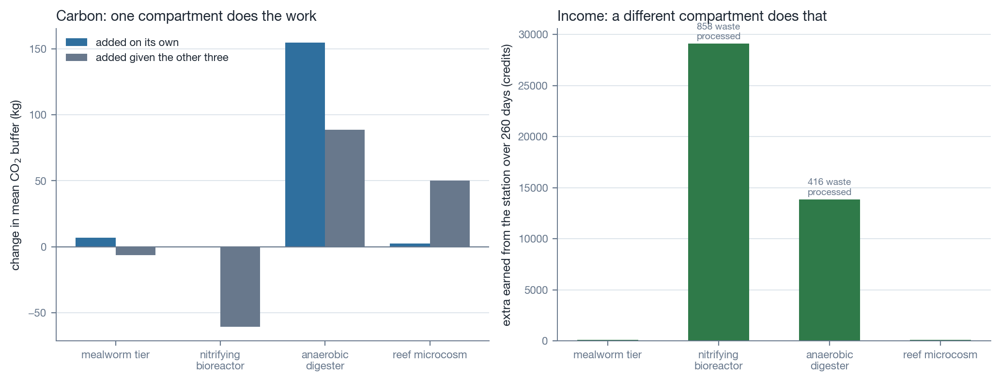
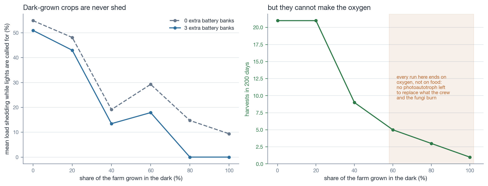
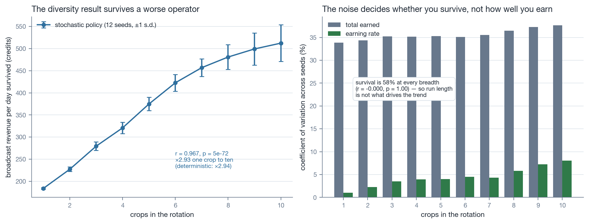
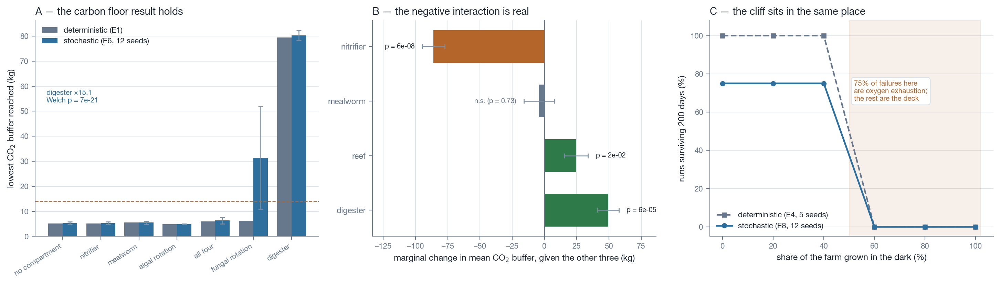

Lunar Farm · BLSS economics · September 2026
Bioregenerative life support is usually modelled as a control problem. Put a decision-maker inside the loop and different questions become answerable — including which incentives make closing it a rational choice.
A closed farm that exports food exports carbon inside it, so its buffer runs down. Below roughly 14 kg the whole canopy drops to 15% of rate. The distinction that matters is between raising the mean buffer and raising its minimum: arms that do the first still spend part of every lunar cycle in carbon limitation.

| Arm | CO₂ floor | CO₂ mean | Harvests |
|---|---|---|---|
| Anaerobic digester | 79.4 kg | 217.2 kg | 14 |
| Mushrooms in rotation | 6.2 kg | 149.9 kg | 16 |
| All four compartments | 5.9 kg | 157.7 kg | 14 |
| Mealworm tier | 5.6 kg | 87.3 kg | 13 |
| No compartment | 5.1 kg | 77.0 kg | 12 |
| Spirulina in rotation | 4.9 kg | 69.0 kg | 16 |
Our first, uncontrolled run showed a plants-only farm failing 3 of 3 and a mushroom rotation surviving 3 of 3 — apparent proof that a respiring compartment rescues the carbon loop. It was not. A photosynthetic control survived too, and once starvation timing and raw-regolith growth were controlled, the mushroom rotation raised the mean buffer and left its floor untouched. The effect was harvest cadence, not respiration.
It is documented in the manuscript rather than quietly corrected, because it is the most transferable thing here.
The farm has two income streams, shaped to price different things. A broadcast mechanic pays for filmed segments whose novelty collapses on airing and recovers slowly; a life-support contract pays on the share of crew life support the farm actually carries. The first should reward variety and the second should be indifferent to it.

Separating what each compartment adds alone from what it adds given the other three exposes a substrate conflict. The nitrifying bioreactor processes more than twice the waste the digester does and is paid accordingly — but every unit it oxidises is a unit the digester cannot mineralise back into carbon dioxide.

A dark-grown crop is never shed when power is short, which argues for growing more of them. It is also a heterotroph that burns oxygen and returns carbon dioxide.

The first four experiments suppress the event deck, which is the model's only stochastic element — so their seeds test reproducibility, not robustness. Re-running the economics with the deck answered and the manager's own thresholds jittered per run gives the seeds something to disagree about.


Answering the deck uniformly at random ended all 120 runs, most inside a month: a coin toss never patches a hull, so pressure walks down to the abort limit, and it accepts the broker's offer to sell the larder down to a twelve-day reserve. That would have supported the conclusion that the economy is fragile. It was the policy that was fragile.
Adding noise is not the same as modelling a worse operator. The reported policy takes the remedial choice with probability 0.75 — a competent operator having an occasional bad day. That number is chosen, not measured.
Compartment ratios are taken from the Lunar Palace 1 ("Yuegong-1") 105-day multi-crew closed experiment of February–May 2014. The ratios are theirs; the throughputs they are applied to are scaled for play.
| Parameter | Value | Source |
|---|---|---|
| Tenebrio molitor bioconversion | 8.13% | Li et al. 2015 |
| Feed excreted as frass | 78.43% | Li et al. 2015 |
| Nitrogen recovery from urine | 20.5% | Fu et al. 2016; Dong et al. 2017 |
| Solid waste degradation | 41% | Fu et al. 2016 |
| Food regenerated in the closed run | 55% | Fu et al. 2016 |
| Carbon imported inside stored food | 247 g d⁻¹ | Dong et al. 2017 |
The reef microcosm compartment is speculative. No marine calcifying system has been flown, and calcification is a local carbon dioxide source rather than a sink. It is included as a design probe and labelled as such throughout.
The model is a game. Its constants are balanced for play, and nothing here is a measurement of a physical life support system. Between-seed variance in the economics experiment is exactly zero because the scripted policy suppresses the event deck — the seeds test reproducibility, not robustness.
The sweep loads the game's own data.js and sim.js and seeds
Math.random, so the analysis measures the code that ships and cannot drift
from it.
node code/01_sweep.js python3 code/02_carbon_stability.py python3 code/03_diversity_economics.py python3 code/04_compartment_knockout.py python3 code/05_night_resilience.py python3 code/06_stochastic_policy.py python3 code/07_robustness.py